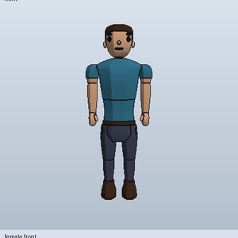

A 3D game, built one small piece at a time.
Goose is a game made slowly and on purpose. You make a character, then walk around with it. Later you will gather materials and craft things.
It is an early prototype. These pages say plainly what works, what does not, and what comes next.
Try it on WindowsSee what works
- WorksMake a character, walk, run and jump, chop trees, craft planks, and build maps in an editor with hills, sun and shadows. Build how trees, benches and rocks look from snap-together parts with textures.
- Not yetNo saving, no shops, no collisions with trees. Much of it is checked by tests but not yet seen in the running window.
- NextLook at it and tune it, then collisions, saving, and image textures for models.
Last updated
Find your way
StatusEverything that works today, everything that does not, and the order of what is next.
GalleryPictures of the character, Goose hat and cape, straight from the check tools.
Try itFour steps to run it on a Windows PC, and how the code is laid out.
LogWhat changed, day by day, newest first.
WordsNew to games or code? The odd words, in plain language.